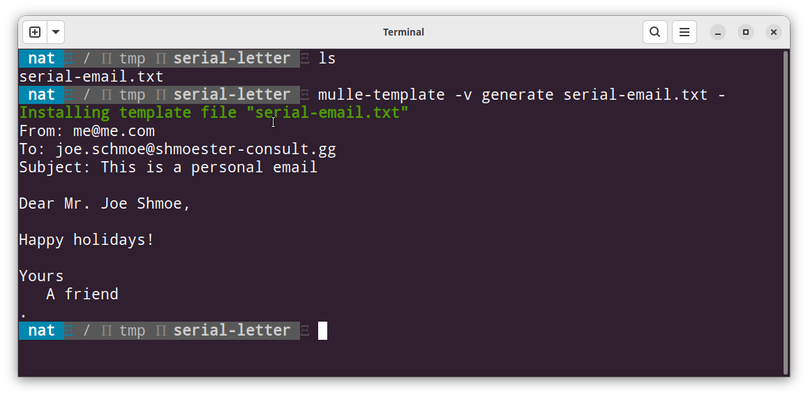
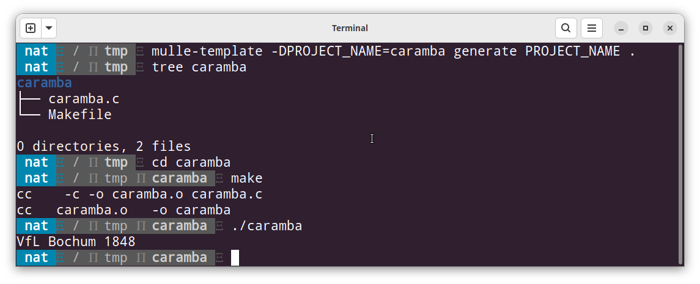

🕋 Template generator
mulle-sde has a template generator to create source files and populate new projects. But it can be useful in other scenarios. Here are three different examples:
Example: Create a serial email
Lets create a little email template. In case we only have an email address of the recipient and no other information, we will address the recipient as “Friend”:
cat <<EOF > serial-email.txt
From: me@me.com
To: <|EMAIL|>
Subject: This is a personal email
Dear <|TITLE|> <|FIRSTNAME|> <|LASTNAME:-Friend|>,
Happy holidays!
Yours
A friend
.
EOF
If you read the previous chapter, you probably already guessed what’s coming next: we need some environment variables to fill the template.
export TITLE="Mr."
export FIRSTNAME="Joe"
export LASTNAME="Shmoe"
export EMAIL="joe.schmoe@shmoester-consult.gg"
Now we can run mulle-template -v generate serial-email.txt - to
get the filled out template:

To see the effect of the
<|LASTNAME:-Friend|>default value, you mustunset LASTNAME. An empty string still counts as value. (If you don’t like the<| |>tags, you can change them to anything, which doesn’t interfere with the other text).
Example: A boilerplate C project from templates
Let’s create a simple C project template, with a Makefile:
mkdir PROJECT_NAME
cat <<EOF > PROJECT_NAME/PROJECT_NAME.c
#include <stdio.h>
int main( int argc, char *argv[])
{
printf( "VfL Bochum 1848\n");
return( 0);
}
EOF
cat <<EOF > PROJECT_NAME/Makefile
.PHONY: all
all: <|PROJECT_NAME|>
<|PROJECT_NAME|>: <|PROJECT_NAME|>.o
clean:
rm <|PROJECT_NAME|> <|PROJECT_NAME|>.o # must be TAB in front of rm
EOF
Now with the template directory in place generate the C project with
mulle-template -DPROJECT_NAME=caramba generate PROJECT_NAME .. You can define
environment variables on the command line as well.

Example: A script file from a template
mulle-sde ships with a number of file templates. More templates can be added
with extensions (more on that later).
For example mulle-sde add foo.sh creates a template generated shell script
file “foo.sh” for use with
mulle-bashfunctions.
Here is how “foo.sh” looks like at the time of writing (contents are subject to change with general progress):
#! /usr/bin/env mulle-bash
# shellcheck shell=bash
#
#
# foo.sh
# serial-letter
#
# Copyright (c) 2022 Nat! - Mulle kybernetiK.
# All rights reserved.
#
#
# Redistribution and use in source and binary forms, with or without
# modification, are permitted provided that the following conditions are met:
#
# Redistributions of source code must retain the above copyright notice, this
# list of conditions and the following disclaimer.
#
# Redistributions in binary form must reproduce the above copyright notice,
# this list of conditions and the following disclaimer in the documentation
# and/or other materials provided with the distribution.
#
# Neither the name of Mulle kybernetiK nor the names of its contributors
# may be used to endorse or promote products derived from this software
# without specific prior written permission.
#
# THIS SOFTWARE IS PROVIDED BY THE COPYRIGHT HOLDERS AND CONTRIBUTORS "AS IS"
# AND ANY EXPRESS OR IMPLIED WARRANTIES, INCLUDING, BUT NOT LIMITED TO, THE
# IMPLIED WARRANTIES OF MERCHANTABILITY AND FITNESS FOR A PARTICULAR PURPOSE
# ARE DISCLAIMED. IN NO EVENT SHALL THE COPYRIGHT HOLDER OR CONTRIBUTORS BE
# LIABLE FOR ANY DIRECT, INDIRECT, INCIDENTAL, SPECIAL, EXEMPLARY, OR
# CONSEQUENTIAL DAMAGES (INCLUDING, BUT NOT LIMITED TO, PROCUREMENT OF
# SUBSTITUTE GOODS OR SERVICES; LOSS OF USE, DATA, OR PROFITS; OR BUSINESS
# INTERRUPTION) HOWEVER CAUSED AND ON ANY THEORY OF LIABILITY, WHETHER IN
# CONTRACT, STRICT LIABILITY, OR TORT (INCLUDING NEGLIGENCE OR OTHERWISE)
# ARISING IN ANY WAY OUT OF THE USE OF THIS SOFTWARE, EVEN IF ADVISED OF THE
# POSSIBILITY OF SUCH DAMAGE.
#
[ "${TRACE}" = 'YES' -o "${FOO_TRACE}" = 'YES' ] \
&& set -x \
&& : "$0" "$@"
#
# Versioning of this script
#
MULLE_EXECUTABLE_VERSION="0.0.0"
foo::print_flags()
{
echo " -f : force operation"
##
## ADD YOUR FLAGS DESCRIPTIONS HERE
##
options_technical_flags_usage \
" : "
}
foo::usage()
{
[ $# -ne 0 ] && log_error "$*"
cat <<EOF >&2
Usage:
foo [flags]
##
## ADD YOUR USAGE DESCRIPTION HERE
##
Flags:
EOF
foo::print_flags | LC_ALL=C sort >&2
exit 1
}
foo::main()
{
#
# simple option/flag handling
#
local OPTION_VALUE
while [ $# -ne 0 ]
do
if options_technical_flags "$1"
then
shift
continue
fi
case "$1" in
-f|--force)
MULLE_FLAG_MAGNUM_FORCE='YES'
;;
-h*|--help|help)
foo::usage
;;
--value)
[ $# -eq 1 ] && match_list_usage "missing argument to $1"
shift
OPTION_VALUE="$1"
;;
--version)
printf "%s\n" "${MULLE_EXECUTABLE_VERSION}"
exit 0
;;
##
## ADD YOUR FLAGS HERE
##
-*)
foo::usage "Unknown flag \"$1\""
;;
*)
break
;;
esac
shift
done
options_setup_trace "${MULLE_TRACE}" && set -x
##
## ADD YOUR CODE HERE
##
log_info "Does nothing, but will soon"
}
#
# You can also use the function `call_with_flags`, which has been defined
# during mulle-boot. It lets you call 'foo::main'
# with FOO_FLAGS interposed.
#
# call_with_flags "foo::main" "${FOO_FLAGS}" "$@"
foo::main "$@"
The BSD license header on top is taken from a file
~/.config/mulle/etc/sde/header.sh, that is included by the template
via a <|HEADER|> tag:
You can execute
mulle-sde addanywhere. The “add” command does not require a virtual environment unlike most mulle-sde commands.
Final words
That is templating with mulle-sde. The most exciting feature is probably, the way that filenames are also subject to templating. The templating features are provided by mulle-template, which can be used outside of mulle-sde.